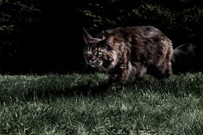
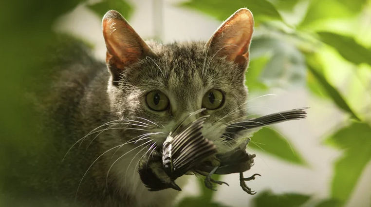

Información General
Gato Doméstico

Los gatos domésticos, sin importar la raza, son todos pertenecientes a una especie, Felis Silvestris Catus, que han mantenido relación con los humanos desde hace muchísimo tiempo. Los antiguos egipcios fuerons los primeros en domesticar gatos, hace aproximadamente 4.000 años. Es probable que los gatos salvajes se hayan visto atraidos a las comunidades humanas por la abundancia de roedores que había en ellas, por esto y su habilidad para cazarlos les hizo ganarse la simpatia de sus habitantes.
Su particular carácter los hace una especie muy independiente: no les gusta recibir órdenes, son territoriales, adoran la limpieza -por eso mantienen impecable su entorno- y se acicalan con su lengua. Les gusta que les pongan atención, y expresan el cariño a su manera y en el momento que ellos quieren, no en el que les impongan. Además, les fascina dormir durante varias horas al día y, por naturaleza, son cazadores nocturnos.
Por su amplio abanico de presas potenciales, por su alta eficiencia como depredador, y por su elevado éxito reproductivo —especialmente si se suministra artificialmente alimento a las colonias sin tomar medidas adicionales para limitar su fertilidad— el gato doméstico está incluido en la lista de las cien especies exóticas invasoras más dañinas del mundo de la Unión Internacional para la Conservación de la Naturaleza.

{kind=link}
{kind=link}